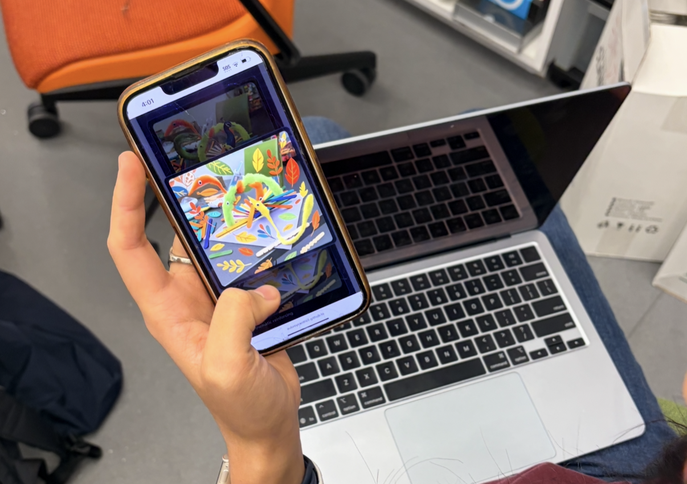
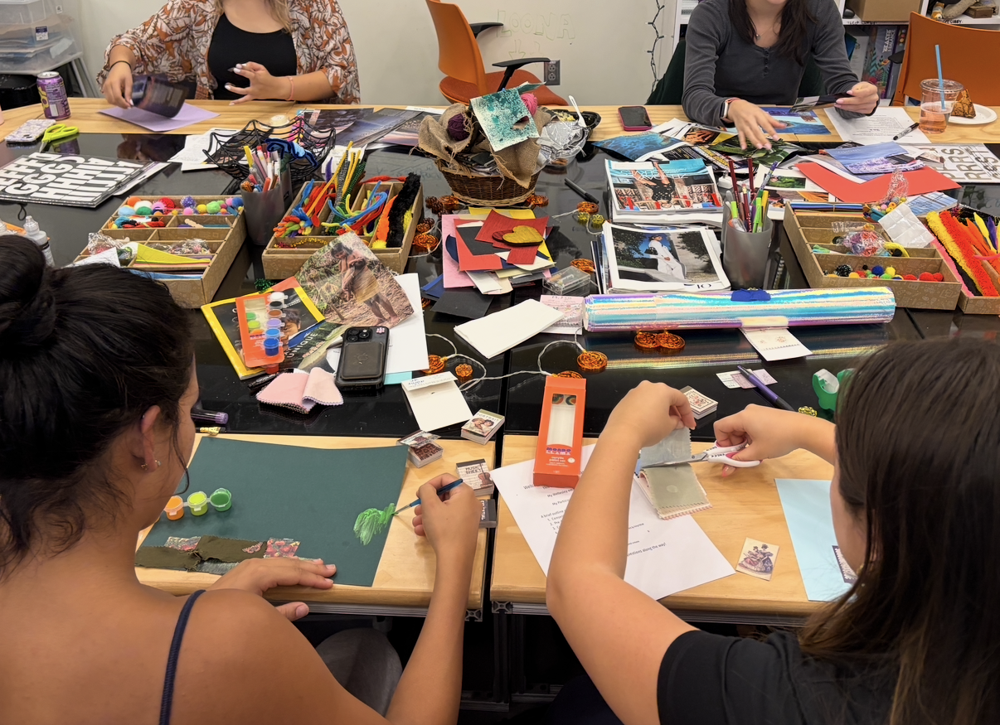
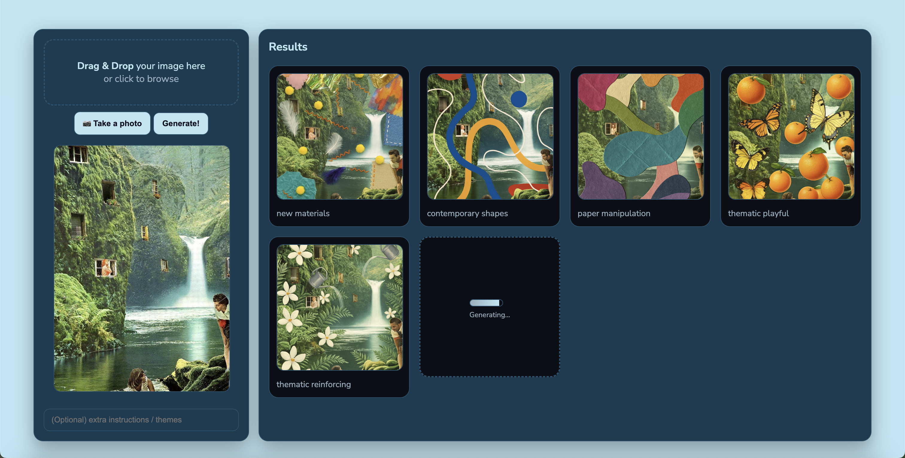

1. Introduction
Human–AI creativity collaboration helps creators generate ideas, visualize alternatives, and explore beyond their technical skill level. But these capabilities also raise concerns: When AI proposes most options, does the user still direct the creative arc? How does rapid iteration shift authorship? And how can systems avoid overwhelming users with too many possibilities?
This work emphasizes co-creation, where AI and user engage in reciprocal ideation while preserving the user’s agency. Drawing on mini-c creativity—everyday creative interpretation—we explore how generative AI can support broad, low-pressure idea expansion without overtaking artistic intent.
Collage offers a uniquely open, material-rich domain for this exploration. Its flexibility supports divergence, experimentation, and playful visual thinking. Our system uses AI only to suggest additions, never to implement or replace, preserving authorship while expanding creative adjacency.
Research Questions:
- How does generative AI influence material, color, and texture choices in collage?
- Does interaction with AI shift a creator’s perception of the collage they produce?


3. System Overview
The Collage Co-Creator generates visual suggestions layered onto a user’s in-progress collage. Rather than producing finished images, the system outputs conceptual prompts across materials, colors, textures, and themes.
3.1 Workflow & Interface
- Step 1: User photographs or uploads their in-progress collage.
- Step 2: System generates five blurred suggestion cards.
- Step 3: User reveals each card to explore visual directions.
- Step 4: User implements ideas physically using their own materials.
- Step 5: Custom prompting unlocks for targeted ideation.

3.2 Variation Types
- New Materials: fabric, foil, feathers, yarn, tactile elements
- Color & Mark-Making: strokes, shapes, contrast
- Paper & Texture: layered scraps, torn edges
- Ironic Imagery: playful objects, humor, narrative twists
- Theme Reinforcement: symbols or motifs aligned with the collage
3.3 Custom Prompting
After exploring the five base variations, users can specify intentional directions—materials, theme, imagery, mood, or spatial placement. Prompts are converted into structured instructions that maintain collage integrity (“add but never replace,” “preserve edges”).
3.4 Implementation & Safeguards
The system uses gpt-image-1 with strict “add-only” constraints to preserve authorship. Prompts filter
out faces, text, and sensitive imagery. If a collage contains faces, users are asked to mask them physically
before uploading to ensure safe generation.
4. Preliminary Findings
Preliminary findings look at user's reflections on interacting with the Collage Co-Creator, responding to the quesiton:
To what extent did using the collage co-creator affect your creation and artistic process?
Strengths: Material & Micro-Ideation Support
- Most effective at suggesting material additions (paint, thread, foil, ripped paper)
- Helped address dead space and small compositional gaps
- Useful when users felt “stuck” mid-process
- Outputs were described as “surprisingly 3D” or “cool”
“It inspired me to use paint.”
“It helped me fill in the empty spaces.”
Limitations: Context Blindness & Practicality
- Occasional misinterpretation of tone (“horror/unhinged”)
- Faces sometimes generated despite constraints
- Suggestions sometimes required disassembling the collage
- Material suggestions were sometimes unrealistic to implement
- Users with strong initial visions found the tool less helpful
Creative Agency & Emotional Boundaries
For collages with personal meaning, users resisted AI influence, noting it could not understand emotional contexts. Some worried about over-reliance or loss of authorship.
“It doesn’t understand my relationship with my sister.”
Summary
Overall, early findings identify the system functioning as a light ideation companion—good for micro-additions, material ideas, and dead-space resolution. Limitations centered on context understanding and feasibility. Continued research will analyze creative efficacy, attitudes toward AI and human collaboration, attitudes of AI's ability to facilitate art, artistic experience, and a qualitative analysis of the iterative collage making process, comparing the results and applications of AI and non AI conditions in collage development.